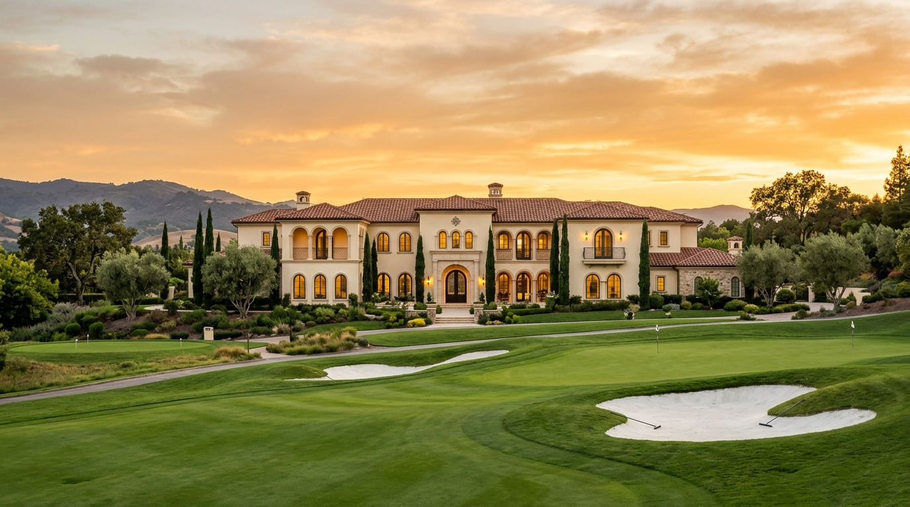

Find your corner of Pleasanton

Ruby Hill →
Pleasanton’s premier gated enclave featuring custom Mediterranean, Tuscan, and modern estates centered around a Jack Nicklaus signature golf course.

Del Prado & Downtown →
Tree-lined streets, historic Craftsman bungalows, and ranch homes minutes from Main Street dining, summer concerts, and the Pleasanton Farmers' Market.

Vintage Hills →
Beloved family neighborhood with generous lots, peaceful cul-de-sacs, and direct pedestrian access to top-rated Vintage Hills Elementary.

Castlewood Country Club →
Perched along the western foothills, offering panoramic ridge views, expansive custom parcels, equestrian estates, and private golf access.

Birdland & Foothill →
Classic mid-century and remodeled homes adjacent to Foothill High School, Pleasanton Sports Park, and scenic Iron Horse Regional Trail.

Pleasanton Ridge Estates →
Highland custom residences bordering thousands of acres of protected parkland, offering sweeping valley vistas, trails, and ultimate privacy.

Laguna Oaks & Stoneridge →
Sophisticated executive homes with private tennis courts, clubhouse pools, manicured greenbelts, and rapid access to I-580/680 & BART.

Kotas County & Valley Trails →
Sprawling country parcels and equestrian estates along Arroyo del Valle, offering wide open California skies, pastures, and vineyard serenity.

Moller Ranch & Knolls →
Elevated hillside residences featuring Mediterranean tile roofs, expansive sunset canyon views, and direct trailheads into scenic open space.